Lista I - Sistemas de Armazenamento
Aluno: Vítor H. M. Biajo Data: 21/11/2021 Professor: Igor Amariz Pires
Contents
Turbina Eólica
Com o objetivo de estudar a captação de potência por uma turbina eólica, o presente estudo considera uma turbina de 1,5 MW e raio de 37,5 m. As seguintes velocidades de vento foram consideradas:
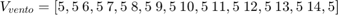
Outros parâmetros são definidos de acordo com a declaração de variáveis a seguir:
clc; clear all; % Declaração de variáveis P_turb = 1.5e6; % Potência da turbina - [W] R_turb = 37.5; % Raio da turbina - [m] V_vento = [5.5 6.5 7.5 8.5 9.5 10.5 11.5 12.5 13.5 14.5]; % Vetor de velocidade de vento [m/s] N_turb = 0:0.1:30; % Rotação da turbina [rpm] w_turb = N_turb * pi / 30; % Rotação da turbina [rad/s] ro_ar = 1.3; % Densidade do ar [kg/m³] A = pi*R_turb^2; % Área de captação do ar [m²] beta = 0; % Ângulo de ataque das pás [º] % Inicialização de vetores P = zeros(length(N_turb),length(V_vento)); MPPT_Y = zeros(length(V_vento),1); MPPT_X = zeros(length(V_vento),1);
Para o cálculo de captação de potencia, deve-se primeiro calcular a razão entre as velocidade da ponta das pás da turbina eólica e a velocidade do vento pela equação a seguir:
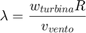
Com o fator calculado, pode-se calcular então a mesma razão para um dado ângulo de ataque ( ), por meio da equação a seguir.
), por meio da equação a seguir.
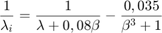
Então, obtém-se o coeficiente de captação de potência 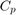 para um dado par ( 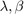).
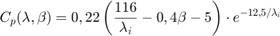
Por fim, com o coeficiente de potência, pode-se calcular a potência captada para uma determinada velocidade de vento, pela seguinte fórmula:
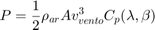
Esse procedimento é feito iterativamente para diversas velocidades de vento de modo a constituir curvas características de potência e velocidade para um sistema eólica. Os passos são mostrados nas linhas de código a seguir. Os cálculos são feitos iterativamente em conjunto com a plotagem das curvas.
figure(1) hold on grid on title("Curva de extração de potência em turbina eólica") ylabel("Potência (W)") xlabel("Velocidade da turbina (rpm)") % Iteração sobre vetor de velocidade do vento for i = 1:length(V_vento) % Calcula lambda para velocidade de vento fixa lambda = w_turb * R_turb / V_vento(i); lambda_i = (1./(lambda+0.08.*beta) - 0.035./(beta.^3+1)).^-1; % Calcula Cp em função de lambda e beta Cp = 0.22 .* (116./lambda_i - 0.4.*beta - 5) .* exp(-12.5./lambda_i); % Calcula potência da turbina P(:,i) = 1/2 .* ro_ar .* A .* V_vento(i)^3 .* Cp; plot(N_turb, P(:,i), "color", "blue"); % Acha ponto de máxima potência MPPT_Y(i) = max(P(:,i)); MPPT_X(i) = N_turb(find(P(:,i) == MPPT_Y(i))); % Adiciona texto de orientação no gráfico txt = strcat('V_{vento} = ', " ", num2str(V_vento(i),'%.2f'), " ", 'm/s^2'); text(MPPT_X(i),MPPT_Y(i),txt,'FontSize',7) end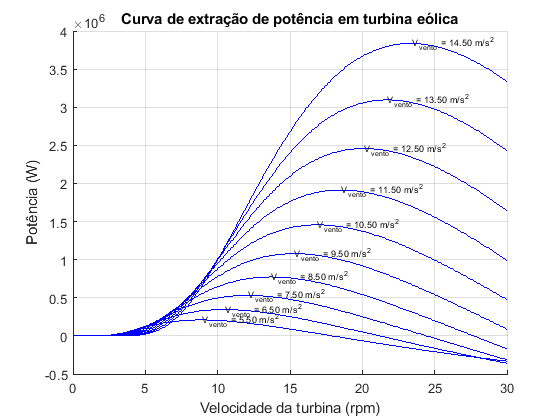
Como mostrado pelas linhas de código acima, os pontos de máxima potência também são extraídos pela função max() do Matlab, de maneira iterativa. Por fim, pode-se sobrepor a curva de máxima potência com os perfis de potência e velocidade da turbina. A curva de máxima potência é destacada em vermelho.
plot (MPPT_X,MPPT_Y, "color", "red"); hold off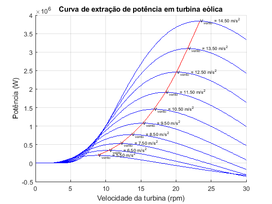
Não obstante, é importante notar que para o caso precedente, foi utilizado um ângulo de ataque fixo em zero graus (0 º), o que não é sempre o caso. O mesmo influencia diretamente no cálculo do coeficiente de potência 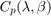, como no caso a seguir, em que foram considerados os seguintes ângulos de ataque:
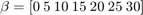